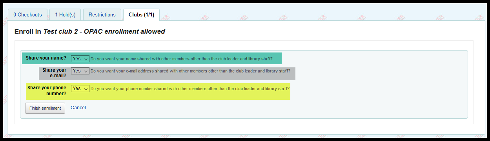

Club frequently asked questions¶
Q: What are the “Club enrollment questions?”
A: Currently we have 3 questions set up that club members need to answer that deal with how their information is shared with other members of the club. They are:
Do you want your name shared with other members other than the club leader and library staff?
Do you want your e-mail address shared with other members other than the club leader and library staff?
Do you want your phone number shared with other members other than the club leader and library staff?
If a patron answers “No” to any of these questions, that information for that patron will not appear on report 3335 - “GHW - CLUB Membership roster for club use”

Q: Why can’t a patron leave some clubs through the OPAC?
A: If a club is set up to disallow self-enrollment, self-dis-enrollment is also disallowed. Currently this is the way that the software works.
Q: How do I know when someone quits a club via the OPAC?
A: If a patron quits a club through the OPAC, their dis-enrollment is recorded and a report can be written that shows this information (in progress). If a patron quits a club that is solely staff managed, there is no record kept that the patron was ever a member of the club, so no data can be retrieved.
Q: Can a patron edit their club settings?
A: No. Currently the only way to change the answers to a patron’s enrollment questions is to dis-enroll them from the club and then re-enroll them in the same club.

Q: What happens if a patron’s home library changes?
A: Don’t know - need to find out [TODO].
Q: When you place a request for a club, what order are the requests placed in?
A: The requests should be randomized.
Q: Is there a way to make the requests go to differnet libraries?
A: When you place a request for a club, the default pickup location is the location you’re currently logged in at. You can select a different library for all of the requests to go to. Currently there is no way to tell the system to send some requests to one library and other requests to another library.
Q: Is there a way to bulk-add patrons to a club?
A: No. Not at the present.